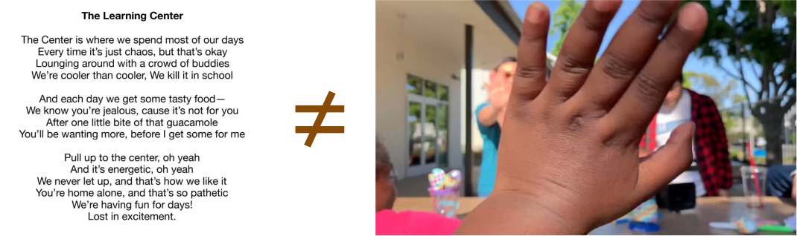

A rap-themed video that demonstrates how kids within an affordable housing community collaborate with each other, co-create with university students, and authentically showcase their activities in their afterschool program.
Overview
Project Type
This was a group video project related to participatory design, ethnographic studies, and media production within a college communication course.
Objective
To co-create a video with kids that captures their everyday activities by understanding their needs in an afterschool environment and how to best communicate with them with their preferences for the video.
Duration
10 weeks
My Role
I made my greatest contributions with project management, media production, and video editing. However, I also employed ethnographic techniques such as journaling written entries and observations within the afterschool environment of Town and Country Learning Center (TCLC).
Tools
Ethnographic techniques such as observations and journaling, Premiere Pro, video and audio equipment.
Core Team
Stephen Luxford, Emily Hardy, Esau Carpenter, Emily Beihold, Jessica Tran, Wayne Phung, Avery Gildner
Mentors
Ms. V - She was the supervisor at the Town and Country Learning Center who supervises the kids in the afterschool program that she hosts. With years of experience in managing an afterschool program, she helped inform and evaluate our group's directions and ideas for the activities that we planned for each weekly visit.
Professor Camille Campion - She is a professor in the University of California - San Diego’s Communications department and has primarily spearheaded efforts in the university’s partnership with Town and Country Learning Center. In the communication course, she has helped led discussions about participatory design, democratic representation of people a community, and enabling empowerment for others.
Avery Gildner - At the time, she was also a student at UC San Diego who has already taken this course more than once. While she was not busy with Ms. V's projects, she gave our group more insights about her previous experiences with the kids in TCLC.
Affiliations
UC San Diego Communication department
Video Challenge
Background
Within the 20-year partnership between the Democracy Lab, a research project group hosted by University of California - San Diego,
and Town and Country Learning Center (TCLC), my group tries to address how we can make a video that captures the co-design and
co-production of experiences and media within TCLC. We also needed to showcase strategies of our personal involvement within
TCLC’s afterschool program to utilize and video capture best democratic practices amongst kids as well as advocating collaboration
and empowerment amongst university students and the after school community within TCLC. This project was done in the context of a
college communication course called Practicum in New Media and Community Life.
Project Approach
To successfully complete the project, we needed to immerse ourselves into the community space that the kids normally engage in and
anticipate what sort of activities should be organized and documented such that kids express interest in engaging with the team and
ultimately become voluntary co-creators of our video.
Constraints Faced
It was essential within our group to organize activities and snacks each week.
This took a considerable amount of time and resources to plan, strategize, and execute the activities that we had in mind for the 10-15 kids we had to serve each week, which meant less time and focus to prepare for the video project.
Need to accommodate for kids' way of communicating and preferences and democratize the video editing process.
We had to garner the kids’ interest in even participating with the video project, and this meant gaining their trust, understanding how to effectively communicate with them, and understanding how to navigate interactions with them around their behaviors.
Democratizing the creation of the video meant adapting practices for video production.
To truly achieve our group’s vision of enabling the kids to help produce our video project through participation and to enable several people to participate simultaneously in the production process, standard biases and practices within video production had to be adapted while also being able to disseminate knowledge of media equipment usage.
The final video draft had to be 5-7 minutes long.
This is quite a length of time set that necessitated a wide range of different video clips to capture as many activities involving the kids and important TCLC people as possible.
Solution at a Glance
Town and Country Center is also the title of a rap-themed video that I have made that seeks to combine all of the voices of the kids in the community
and footage of the daily activities that the kids participate in to authentically capture kids' participation and co-documentation of their afterschool community.
The official title of the video.
Video Process
01 - Ethnographic Research
Each week my group and I visited the Town and Country Learning Center (TCLC) in person. These visits were opportunities for our group
to immerse ourselves into the environment that our group's mentors, kids, and other TCLC community members were a part of.
02 - Field Notes
Each member of our group within the course would recall their general experiences after each visit at TCLC through written entries.
03 - Group Consensus and Discussion
My group members and I would discuss about our interactions with the kids, plan on what activities and behaviors to anticipate for our
group's following visit, and align with each other on what we can contribute to the next visit.
04 - Concept Testing and Drafting
My group members and I would execute different tasks to manage the activities that we outlined for each upcoming visit as we slowly
merged group activities with the kids with camera equipment tasks for media production. We would change up these group activities based on
how the kids' reactions to our group's execution of these activities related to the objectives that our video seek to accomplish. An initial
video draft would be edited and showcased to the TCLC community.
05 - Feedback and Iteration
My group members and I would execute different tasks to manage the activities that we outlined for each upcoming visit as we slowly
merged group activities with the kids with camera equipment tasks for media production. An initial draft would be edited and showcased
to the TCLC community.
Research and Findings
Understanding TCLC
Each week my group and I visited the Town and Country Learning Center (TCLC) in person for about 2 and a half hours, up to a total
of 8 times throughout the duration of the project. Our group's immersion within the environment of TCLC not only established a shared
group understanding of what the environment and circumstances were for the kids and local community members, but we gradually came to
understand their habits, behaviors, and interests. Despite the uncertainty of my role within the community, I focused on observations and
key interactions that I had with some of kids, listening to Ms. V's knowledge about how the kids behave, and participating in group
activities that our group had organized.
Journaling
Each of us individually did a diary study of the project. This took the form of weekly journaling into separate documents called field
notes, so that we would be able to recall and reflect upon our observations and interactions with the kids after each visit. Below are
the main points that I captured from my field notes during the first couple of visits.
Digitized journal entries for each weekly visit.
Field Notes from First Visit
Social Scene
General synopsis of events at TCLC
“My group and I mainly faced Ms. V to hear her chatter and gossip about the behavior of the children...”
“my classmates and I went with the kids to do all sorts of things they wanted to do outside, which included chasing for tag games, handling the football, or just plain conversations”
Focused Observations
Closer look of captured moments.
“Ms. V had extended conversations with the children walking by our table as she constantly turned herself towards the general direction of where the children were and give questions, polite warnings, and directives to them.”
“I noticed that two other boys, Jayden and Xavier, also wanted to join in after a couple of throws with each other, but whenever I had a handle with the ball, either Jayden or Xavier wanted me to pass the ball to them or Alexandre just wanted me to pass the ball back to me.”
Reflections
Applicable and practical insights gained, with the help of existing literature.
“I felt that...the activities taken places associated with relevant objects, undergraduate students, and children, really was important to highlight valuable strategies in producing learning experiences”
“Much of the practices in creating such activities will account for appropriate institutionalized practices/guidelines that the community members (like Ms. V) have placed.”
Field Notes from Second Visit
Social Scene
General synopsis of events at TCLC
“with everyone in Ms. V’s office, we discussed with everyone else at the office about ideas that our group had come up with. Jessica and Emily H. were able to list out some of the ideas that they had, and Ms. V gave feedback to each of the ideas.”
“ There was Avery and Jessica who supervised with the snack preparation in the kitchen area while the rest of us either assisted children with their homework at the tables or helped with facilitating the musical instrument activity with the guitars that a couple of my group members brought in.”
Focused Observations
Closer look of captured moments.
“Jessica and Emily H...proposed themes such as (but not limited to) having a talent show for children to showcase their personal capabilities, a sports competition based on her understanding of the children, and musical pieces that the children can learn and share together.”
“She turned down the talent show idea as well as having a sports competition idea because she explained to us there was some flaw with how each idea accounts for the inclusivity of children’s participation with the theme.”
Reflections
Applicable and practical insights gained, with the help of existing literature.
“Perhaps Alexandre still had an impression on me as a ‘stranger’ and one of those ‘adults’ like Ms. V who doesn’t want him to have fun, but I definitely will need to learn other ways to empathize with him so that I can intervene with his practices and interests in mind.”
“There was a raised consciousness in how my intervention with TCLC has a ripple effect amongst our group, and how we can devise best practices to properly implement the master-apprentice model of our project research during that day, our group enabling the children to have much of the power and say about their world as if they were experts highly specialized with their involvement with the center.”
Problem Definition
Coming Up With Initial Ideas
Our group came to a rocky start when we established ourselves with the kids within TCLC, but that didn’t stop us from ideating on lots of different ideas.
A couple of my other members asked Ms. V to evaluate them; some of those ideas included a theatrical play, a sports activity, and a talent show. Ms. V
had flatly refused a lot of the ideas offered because some of these ideas would not encourage the kids to think. The ideas were also
susceptible to negative social and power dynamics amongst the kids, notably how there might be unequal levels of engagement for some of the ideas.
“We were left with Ms. V to inform us that the ideas should try to have children, even among the brightest ones, to be challenged somehow so that there
is vested interest in participating with the idea while simultaneously making the activities revolving the idea inclusive to everyone.” -
Wayne, Week 3 field notes
“‘The stronger personalities would just run the show and the quieter personalities would end up doing nothing. You need a project that puts all the
kids on an equal playing field and makes them think.’ Mrs. V said in reasoning.” - Stephen, Week 3 field notes
Ideas Picked and Results
There eventually was a group consensus to try out the following activities that would be conscious and inclusive of the kids' interests while keeping them
challenged and engaged throughout their time at the afterschool program: instrument-making using arts and crafts supplies, a musical session for the kids to
gather and sing a song together, and song writing. During the subsequent visits, my other group members’ had mixed reactions with their observations and
engagements with the kids relative to the activities and when they had their roles to make snacks for the kids. These were the number of themes identified:
Kids making instruments with one of my group members.
Some explained how the children either were thoroughly focused on the instruments, or found it more challenging to make them.
My team members had to be self-critical of their roles and involvement around the children as they helped to moderate social dynamics amongst the kids, such as kids having arguments with each other, kids being sneaky with snacks, kids spreading rumors amongst each other, and kids’ need to be listened to when they struggle with an activity.
Setting boundaries and understandings for mutual respect between my team members and the kids was critical in communicating to the kids what was okay and not okay to do while simultaneously encouraging or discouraging types of behavior.
Insights on Needs and Opportunities
Based on class discussions with Professor Campion and classmates as well as assigned readings, the concepts of representation, democracy, and empowerment within the youth community involved
complex socio-technical considerations. These would include how the kids's intents and motives shape both their individual and collective identities and roles within their community, how
available resources and technology afford experiences that are more meaningful and engaging for both the kids and our group to participate in, and how active listening and co-creative usage
of resources and technology can enable the kids to enhance their overall experience within their time at TCLC.
There had to be a way to document activities throughout the rest of the visits without adversely affecting the kids's perceptions of our group in the presence of camera equipment.
It wasn't enough to just be present with camera equipment and have most of my group members simply record the kids. It was important to show that the kids aren't just actors
exoticized in our video, but that they could take ownership of media production as co-creators and directors to authentically represent their own activities.
Project management logistics must be empathetic to the constantly changing interests and representation of the TCLC afterschool community. Ms. V's evaluation of our activities
as well as the kids' mixed reactions with our prescribed activities not only meant that our activities must remain cognizant of the kids's interests, but there had to be a robust
way of effectively capturing a diverse set of activities that the kids engage in and telling an authentic narrative of TCLC informed by those activities.
How might we organize and document activities that best represent the kids’ involvement within the community space while being inclusive
and aware of their potential interest in collaborating with us in the video production process?
Media Experimentation
It became quickly apparent during team meetings that there was so much focus on trying to come up with activities and snacks for the kids to support the empowerment amongst kids’
learning experiences that there was nothing really planned for project logistics. I decided to leverage my skills with media equipment and film production to the project to help the
group gather media footage.
Bringing and Sharing the Camcorder
Starting with the 3rd visit, I decided to bring a camcorder along with me for the kids to try out. There was a general interest for several kids during various times at those
visits to handle and experiment with the camcorder, but it was also necessary for me to instruct them on how to best use it so that the footage didn’t come out too bright, too
dark, or too blurry for later use.
Although the group and I wanted the kids to feel like they had a lot of freedom to use the camcorder however they pleased, it was important for the kids to exercise care
and proper handling of the equipment. Before I allowed each kid to use the camcorder, I would instruct them that they would have to listen to my instructions and stick by me
the entire time so that I would be able to show them the ropes of how to make adjustents to ensure quality footage captured. Other than that, each kid who handled the camcorder
recorded as they pleased.
One of the kids holding the camcorder in front of an iPhone camera.
These were my field notes during those visits from my observations and reflections of the kids using the camcorder.
“Jayden had a bit of fun with it as he wanted to record Esau singing in front of the camera for a brief moment. He was fixated on the monitor as he attempted to emulate some more close up shots”
“[I had] Jose’s interests and curiosity for the camcorder in mind, but I remembered earlier about what Stephen did to make sure that Xavier knew the rules about using the camcorder. Unlike the other kids, he seemed to have his hands more steadily on the camcorder, even when I quickly went over how to use the camcorder’s main controls...”
“Jose started to point the camcorder at me and wanted to interview me. At that moment, that was another surprise that I had not expected, as I thought this sort of interaction would not have happened so soon until I established more rapport with him...Jose wanted to explore a bit more with the camcorder towards the vacant playground area, so I tagged along with him on a mini-adventure.”
“If our group can moderate and harness the benefits of self-directed play and exploration within our behaviors and planning for the following weeks, there is no doubt that we can easily guide the kids to more frequently share their insights of their own lives embedded within the program and the creation of our group’s project.”
It became more apparent during the later visits that the kids didn’t want to have to go through and remember all of
the instructions that I have given them and instead enable the camcorder to be used ad-hoc to capture key memorable
moments that the kids wanted to record, such as other kids skateboarding.
One of the kids who brazenly wanted to be recorded in this particular stance on his skateboard.
So, I tried to automate or preset some of the more complicated camera settings to make it easier for them to capture those moments while still getting quality footage.
Kids who wanted to race with me and each other to the other side of the TCLC building.
Synonymously with my attempts to garner interest in trying out the media equipment, my other teammates had one particular kid named Qhadafi rap out song lyrics that
were related to the Town and Country Center. This was retrospective to how my other teammates wanted to improve upon the activities that we hosted, giving more space
and options for the kids to freely participate in whatever activities best interested them.
Qhadafi free-style rapping and reading song lyrics on a piece of paper.
First Draft
Here was a short 1-minute first draft of the rap-music video, which mostly consisted of an audio recording of Qhadafi's rap with lot of footage
recorded of the different activities recorded. Some of these activities included kids doing their homework, using the camcorder to record, making
instruments, and even doing an improv exercise around a circle.
Iterations
Issues with First Draft
I showed the first draft to Ms. V, Professor Campion, and to some of the kids. Although, there was not a lot of feedback that was captured, Ms. V and Professor Campion
liked how the video authentically captured a story of representing the kids at TCLC. The kids liked how they got to be a part of the video and to see firsthand how they
represented themselves. Other than how relatively short the video was, there was a lot of room for improvement other than audio issues.
Lack of Inclusivity and Representation of Voices
Despite the good variety of clips that attempted to showcase most of the kids, the rap portion of the video only showcased Qhadafi, which isn’t representative of the voices of TCLC.
A small section of freestyle lyrics that Qhadafi made. All of the song lyrics in the first draft were only rapped by Qhadafi, and not by anyone else.
Disconnect Between Song Lyrics and Video Clips Shown
Although the intention to diversify the kids and the typical interactions that would occur at TCLC, there is a disconnect between the rap lyrics and the video clips portrayed in the video, which doesn’t promote a storytelling element that the lyrics have about TCLC.

There isn't a coherent connection between the mentioned rap lyrics and the clips that were shown.
Need for Greater Authenticity and Representation of TCLC
In conventional videos, the editing process omits much of the behind-the-scenes footage. Much of the content captured throughout the weeks have the potential to authentically capture the environment and interactions that the kids normally engage in, and there were 4-6 additional minutes to fill in with this kind of footage. It was important to not only capture the best moments in relation to the narrative of the video, but to also accurately represent a sense of community that the TCLC has that the rap video inadequately accomplishes.
Greater Interest for Participation in the Video
Nevertheless, other kids realized how talented Qhadafi’s freestyle rap was and the chance that they had to be a part in the rap video. There was much potential of democratizing
participation of Qhadafi’s song lyrics for other kids and improving the experience of viewing the video. This also meant that I needed to somehow democratize usage of media
equipment for the kids in the TCLC community to participate in.
Bringing in More Equipment to Share
Managing one existing camcorder alone wasn’t going to be a scalable solution, especially if other kids wanted to rap as part of the video as well.
For the following visits (around the 5th to 7th visits), I decided to try and bring an additional camera and 2 audio recorders.
I trained my group members on how to manage basic operations of starting audio recordings, stopping recordings, and keeping track of the volume input
of the kids’ voices when they were rapping. Similar instructions were made to the cameras and the camera lens. I trusted that they were able to
help either facilitate the rap recordings the kids made, enable kids to handle the audio and media recordings of what was going on with the kids
or let other kids get a behind-the-scenes experience of operating the equipment themselves.
This was the typical set of equipment that I decided to bring in: a few audio recorders with a set of headphones for each (top images), one large camcorder (bottom left image), and a smaller mirrorless camera (bottom right image).
It didn’t come without some risk to damaging the equipment or further clarifications on how to perform certain functions with the equipment,
but with trust and minimal guidance, the kids and my group members got along very well with hosting and mediating their own recording sessions outside.
Kids would use the audio recorders to record their rap voiceovers or help capture video footage of the sessions.
Democratizing the Post-Production Process
Even after capturing the footage, another lingering problem faced of how to democratize the process of post-production. Indeed, it was inevitable that no such popular technology
exists right now could combine the performance and video editing capabilities of non-linear editors with online group collaboration features. Even so, there would be a learning
gap of unforeseeable magnitude that the kids would have when directly engaged with editing software.
It was also necessary to create a document to facilitate the task of manually gathering metadata of the footage. During the post-production process after around the 7th visit, I
helped to create a set of instructions for the rest of my group to help capture relevant information from the unedited video clips that I uploaded that would ease the process of
manually looking up video clips that I needed. This was also suited to the rest of my group’s needs in wanting to help out with the video editing process by enabling each of them
to look through video clips and give context to what they are, other than default numbered titles.
This document contains its purpose and instructions for my teammates on how to contextualize information from captured footage. This included referencing the found video clip to the corresponding week, describing the video clip, and including tags to more quickly capture clip description.
This document helped me to focus only on clips that were usable (not blurry or too bright/dark) and that captured important interactions that the kids had while easily disregarding
footage that were not considered relevant to the main portion of the video.
Second Draft
Post-Production Edits Made
As I edited, I listened through all of the audio recordings that the kids participated in. These recordings helped to ensure that there was a diverse mix of kids mentioning
some portion of the lyrics in the video. An inside look of some of the audio sessions and names of the kids within capturing the metadata of the video clips was also important
to represent the actual audio sessions that the kids participated in as well as memorable moments that were opportunistically captured by either a team member or one of the kids.
Here was the second-iteration of the video, with the audio improved, with more kids included within the rapping portions of the video, and with subtitles.
This was presented in-class with other classmates and the professor viewing this. This iteration was also presented at TCLC.
Additional Feedback
Feedback Captured
Here was the main feedback that my teammates and I gathered from our mentors and fellow classmates, which was represented as
what was appealing about the video, what was problematic about the video, and what changes should be made to the video. A
comprehensive list of feedback notes and other important considerations can be viewed within the
Insights and Prioritized Recommendations document.
Likes
Story was appealing.
There was a lot of apparent involvement with the kids.
Inclusivity was evident as there were other people like Ms. V, Professor Campion, and my team members who were in the video.
Visual effects made the video appear like an actual music video.
Clearly demonstrated the kids using the camera and the process that went into making the video (behind the scenes).
Dislikes and Suggestions
There were audio pops that occurred (audio issues that should be examined and remedied).
A specific kid wanted to be in the video, but accidentally wasn’t. Other kids could have been included as well.
There was a need for subtitles to be included.
Correction was needed for general misspelling of some of the kids’ names and certain words.
Introduction could be shortened and some of the clips for bloopers should be replaced.
Subtitles were included, audio volume and noise from some of the kids was mediated to the best of my ability, and other edits were implemented in place.
Final Video
This is a rap-themed video named Town and Country Learning Center, aimed to showcase the kids’ activities within the center as well as how they participate
in their own process of making of the video. This helps to reflect the best kind of authentic representation for themselves, not merely as actors of our own
project with staged activities, but active participants in showcasing their lives.
Rap-Themed Song
2 minutes of video clips that highlight memorable moments of the kids, Ms. V., Professor Camille Campion, and my group members. Kids’ audio recordings
of some portion of the rap lyrics are made from a diverse pool of kids who participated in the recording sessions to further demonstrate an inclusive
community and typical behaviors that the kids experience in relation to the narrative.
Behind the Scenes Look
About 50 seconds was dedicated to the production of the rap video that isn't normally portrayed. This was to demonstrate how the kids actually handled
the media equipment and participate in audio recording sessions such that they took on the role as not just the actors, but active co-creators who wanted
to collaborate with our group members and be active contributors to the production of the video.
Bloopers!
About 1 minute and 20 seconds attempt to humorously capture memorable moments from the kids that revolve around some of the activities that they do,
whether on a typical day or with some of the pre-planned activities that they did with some of the buddies.
Results
The final draft was showcased in a studio room with a projector screen on UC San Diego campus during a time where Ms. V, Professor Campion, and the kids
went on a field trip to tour the campus grounds. After screening it, the kids wondered why not all of the voices seemed to be included within the rap, and
our group explained about the logistics of the sounds that we recorded. Overall, everyone had many different moments of laughter and joy throughout the final
screening of the video.
The final draft was also submitted as the final assignment for the communication course. Ms. V has been granted permission to view the video so that she could
potentially use it for a future grand opening of TCLC. Professor Campion also has the final draft of the video, which will hopefully be used for future quarters
as a reference for other students to look at.
Reflection
Visiting the kids each week reminded me of the experiences, blessings, and tribulations that I had to face when I was just like them. I felt humbled and appreciative
of the opportunity for each week to see my team members interact with the kids while I was able to record those small, yet timeless moments from the kids at TCLC.
The effort that I placed into organizing the media equipment, post-production logistics, and making snacks (for one of the weeks) kept me motivated to make a video
that will leave the kids hopeful for more experiences to document their activities. I learned a lot from working with my team members in empathizing with the whimsical
needs and attitudes the kids had each week during our group discussions before and after our visits. With their guidance and help, I learned the impact of youth empowerment
and appreciated more of what a community is all about within TCLC.